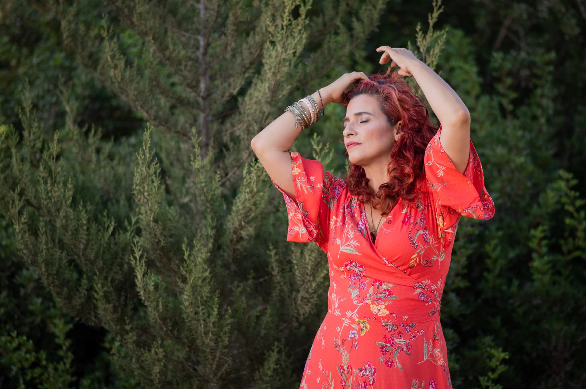

מרחב לעצירה,
נשימה וחיבור פנימי
מקום לעצור את הרעש, לנשום עמוק אל הבטן, ולהתחבר מחדש אל השקט שבתוכך.
מקום לעצור את הרעש, לנשום עמוק אל הבטן, ולהתחבר מחדש אל השקט שבתוכך.
המרחב של אורפז הוא מקום של ריטריטים, סדנאות וימי העצמה שמאפשרים לעצור, להקשיב לגוף, ולחזור לעצמנו בקצב רך.
זה לא טיפול. זה לא אימון. זו חוויה שמחזירה נשימה.
זמן לעצור ולהוקיר תודה על היש. טקס מרגש שפותח את הלב ומכניס אור והודיה לחיים.
סשן ריברסינג עמוק ומשחרר. חיבור לכוח החיים שזורם בנו, שחרור חסימות ויצירת שקט פנימי אמיתי.
ריפוי אנרגטי במגע או מרחוק. תהליך שעוזר לאזן את הגוף והנפש ומעורר את כוחות הריפוי הטבעיים.
הליכת מלאכים, שהייה מודעת ביער וחיבור לשורשים. להרגיש את האדמה ולספוג את האנרגיה המרפאת שלה.
מרחב בטוח ומכיל לשיתוף, הקשבה ותמיכה. מקום להיות בדיוק מי שאת בלי שיפוטיות ובלי ביקורת.
שחרור הגוף דרך תנועה חופשית וריקוד. לעורר את אנרגיית החיים, לנער מתחים ולחגוג את הגוף.
"המרחב נולד מתוך מסע אישי של שבר, התבוננות ובחירה. מתוך תקופות שבהן קשה לראות את ה'יש', מצאתי כלים פשוטים ועמוקים שמאפשרים לעצור, לנשום, ולבנות עוגן פנימי שאפשר לקחת חזרה לחיים."
המרחבים שאני יוצרת משלבים שיח, תנועה, נשימה והתבוננות פנימית, בתוך מסגרת תומכת ומכילה. הקליניקה שלי במשמר הנגב היא מקום מבטחים שבו אפשר להוריד מגננות.
אני מזמינה אותך לבוא בדיוק כפי שאת, ולגלות מחדש את הכוח, הרכות והקסם שכבר קיימים בתוכך.

מידע מקצועי ומרתק על הכלים שמשמשים אותנו במסע הריפוי.

הנשימה היא הגשר בין הגוף הפיזי לנפש. ביום-יום, רובנו נושמות נשימות רדודות אל החזה. בסדנאות שלנו אנחנו מתרגלות נשימה מודעת ומעגלית.
זהו כלי טיפולי עוצמתי שמזרים חמצן מוגבר לתאים, מעורר את המערכת הפרא-סימפתטית ומשחרר מתחים, טראומות ורגשות כלואים שהגוף אגר.

משחר ההיסטוריה, נשים ישבו במעגלים. המבנה המעגלי הוא קסום - הוא מבטל היררכיה, לכולן יש מקום שווה, וכולן רואות אחת את השנייה בגובה העיניים.
המעגל יוצר 'רחם' אנרגטי. זהו מרחב בטוח שבו אפשר להניח את המסכות והתפקידים של היומיום, לשתף ללא שיפוטיות ולהיטען באנרגיה.

אנחנו עשויות מאותם חומרים של האדמה, אך החיים המודרניים ניתקו אותנו ממנה. חיבור בלתי אמצעי לטבע הוא צורך ביולוגי בסיסי.
החיבור לאדמה מסייע לפרוק עודפי חשמל סטטי, מאזן את קצב הלב ומפחית את רמות הורמון הלחץ.

המילה ריטריט פירושה "לסגת". לא נסיגה מתוך חולשה, אלא נסיגה אסטרטגית מחיי היומיום, מהרעש ומהמטלות, אל תוך שקט מאפשר.
בריטריט אנחנו יוצאות למסע קצר שהוא רק שלנו. מספר ימים מרוכזים של סדנאות, אוכל טוב, טבע ואחוות נשים שמאפשרים טעינת מצברים עמוקה.

כל דבר בעולם עשוי מתדר ואנרגיה, וגם אנחנו. לעיתים נוצרות חסימות אנרגטיות בגוף כתוצאה מסטרס, כאב או מחשבות מעכבות.
טיפול הילינג, באמצעות מגע עדין או הכוונה מרחוק, עוזר לפזר את החסימות האלו. הוא מזרים "אור" ומעודד את כוחות הריפוי הטבעיים של הגוף.

מיינדפולנס ומדיטציה הם לא "לרוקן את הראש ממחשבות" – זו משימה כמעט בלתי אפשרית. המטרה היא ללמוד להתבונן בהן מהצד בלי להישאב.
באמצעות דמיון מודרך והקשבה פנימית במרחב שלנו, אנחנו לומדות לייצר עוגן של שקט, שאפשר לחזור אליו גם כשבחוץ סוער.
הגיע הזמן לעשות משהו טוב עבורך. להשאיר את הדאגות בחוץ, להיכנס למרחב מוגן של צלילים, תנועה ונשימה ולהתחבר לעצמך מחדש.
לפרטים והרשמהאנו בונים ימי גיבוש והעצמה לצוותים המשלבים כלים מעשיים מהשטח – נשימה לשחרור מתח, חיזוק החוסן המנטלי, ויצירת קשר אותנטי בין חברי הצוות.
להזמנת סדנא לצוות